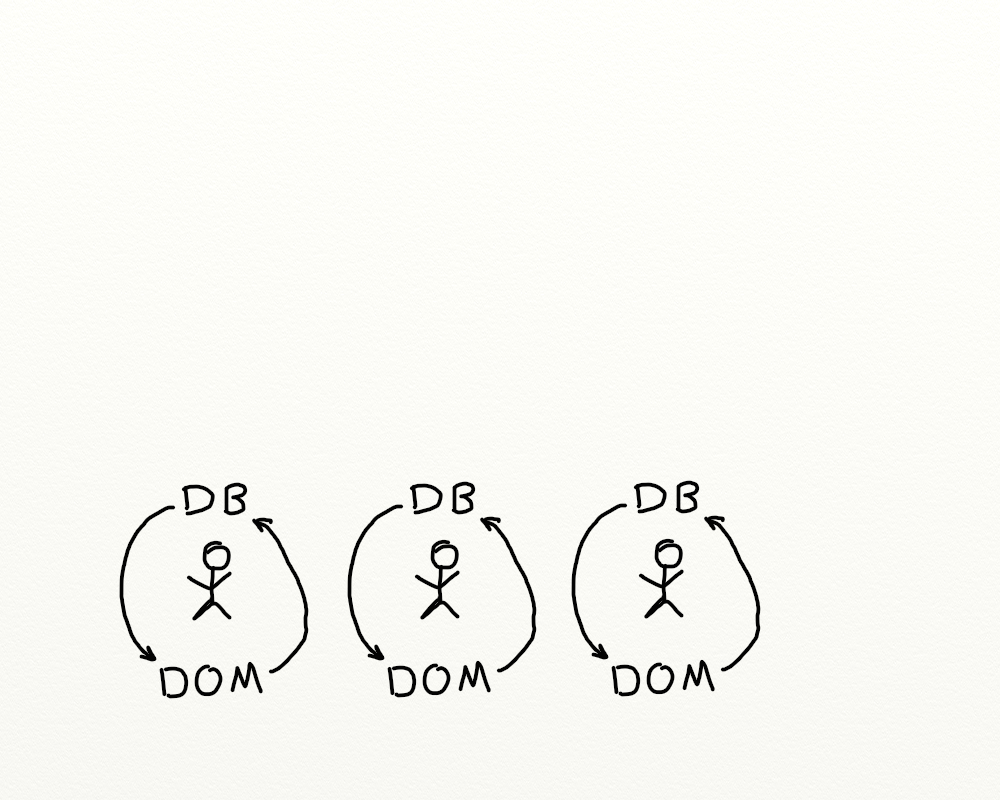
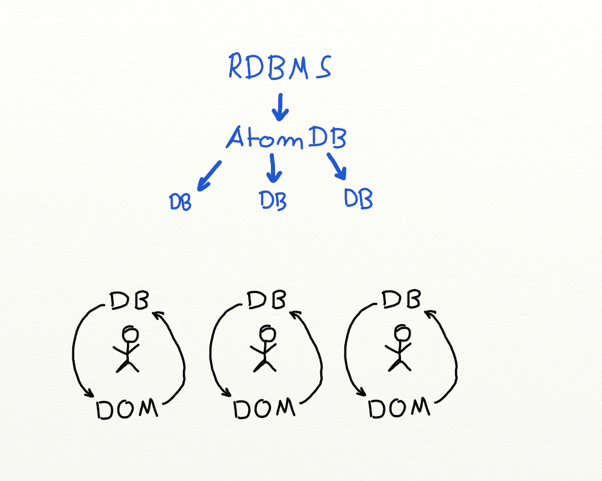
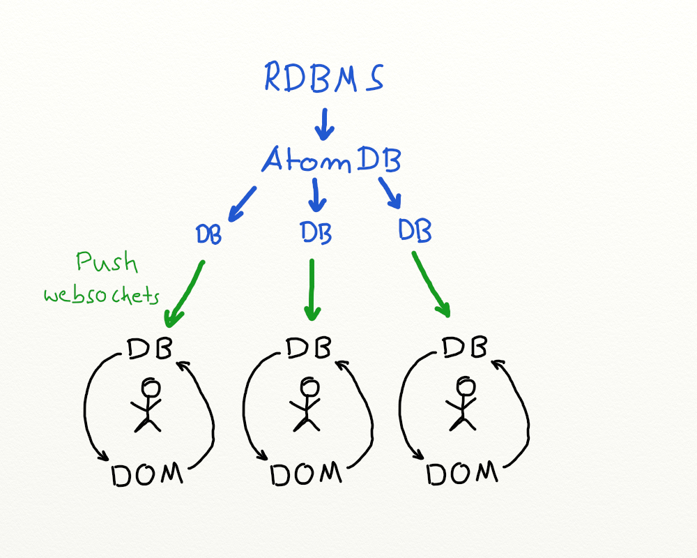
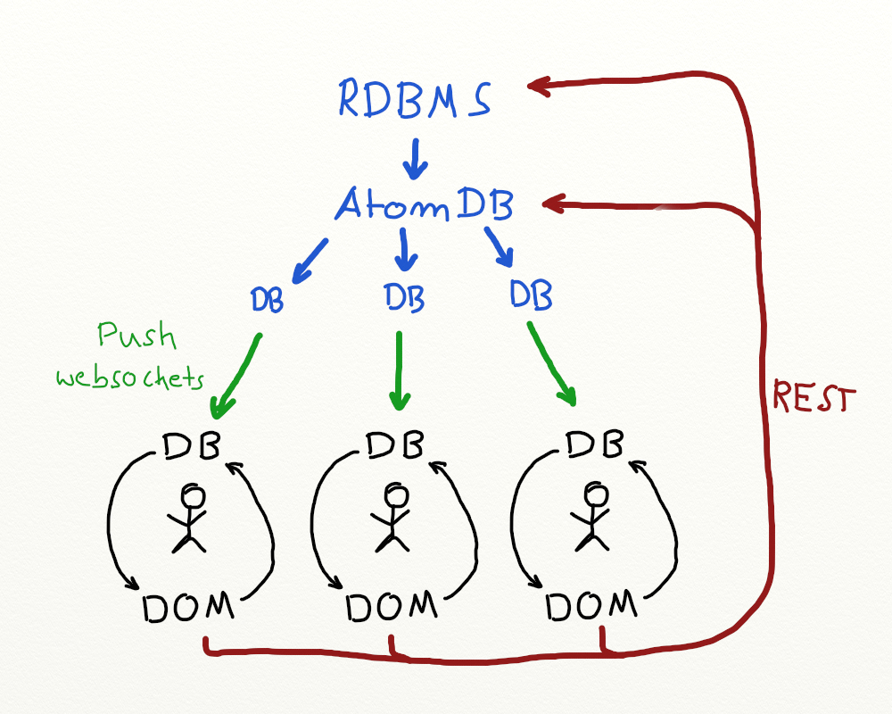

At least a part of the routes are SPAs.
Updated state on the server needs to be reflected on the client.
⇒ extending the re-frame concept


No, but on how many cores does your application run right now?

We push the state in the spirit of reactive programming.
nothing else, no RPC style, nothing !
⇒ WebSockets via ptaoussanis/sente seem to work rather well

We can use the same routes for the API and the frontend!
will save you a ton of work
enables a certain kind of architecture
Two (n-) way syncing data is very hard/expensive to implement. So we just do not do it.